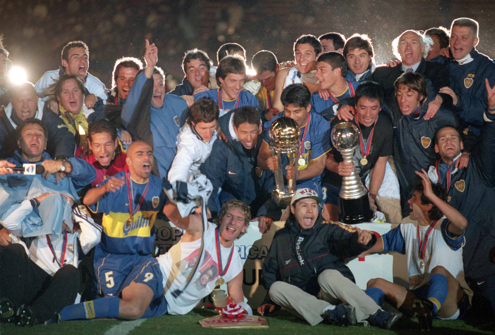

La Intercontinental contra el Real Madrid
El amanecer del 28 de noviembre de 2000 fue azul y amarillo. Aquel día, en Tokio, a 18.351 kilómetros de Buenos Aires, Boca alzaba la Copa Intercontinental luego de un triunfo por 2-1 ante Real Madrid que sacudió al mundo.